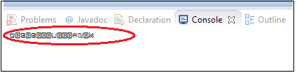

Write Khmer Language in your Android
To display Khmer Language on you android phone, you will need to do the converting so that
android can read your Khmer font.
We will use eclipse for doing this transaction.
- Go to the project Khmer Converter in your workspace
- Go to src -> (default package) -> Convert.java
- You will see this block of code

- Inside the red circle, type Khmer unicode in between ("")
- Once you have finish press (Ctrl + F11) on your keyboard to run
- Inside this window, copy the title in the red circle

- Here your unicode has converted, pass it to somewhere for later used.